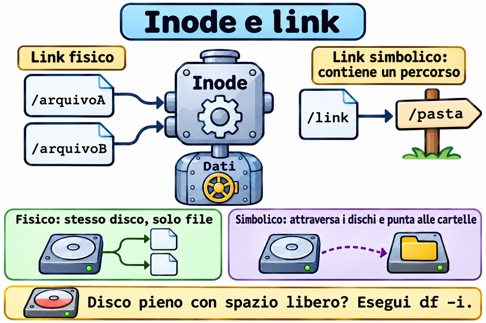
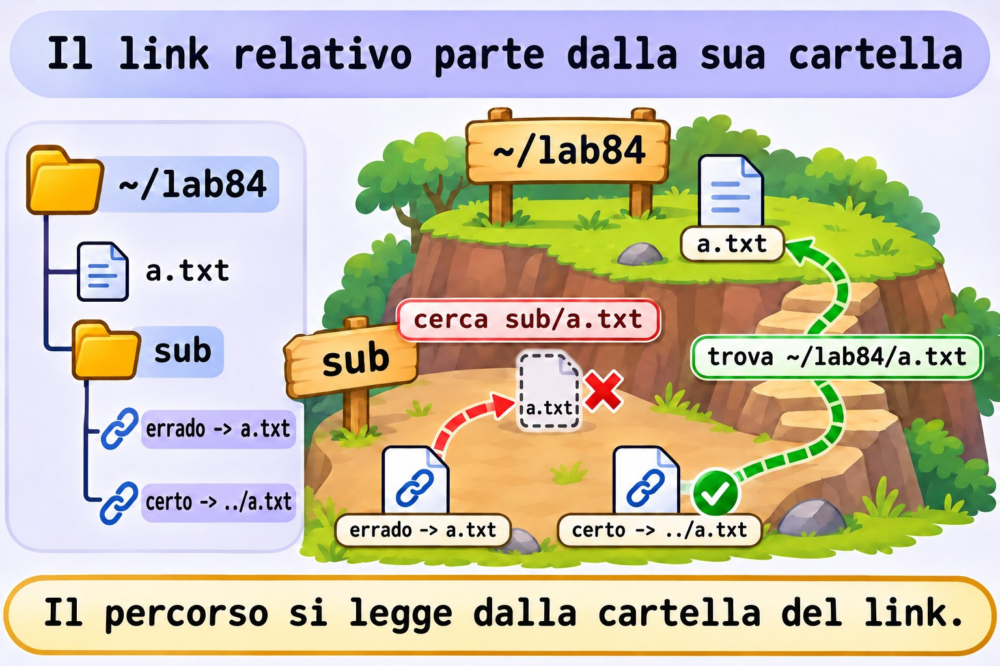
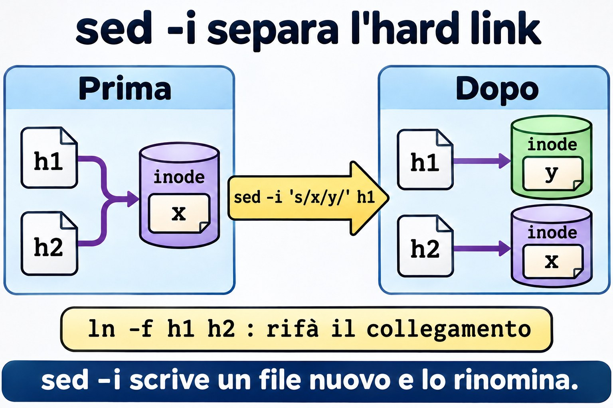

Lezione 8.4 · Link
Il nome di un file non è il file. Sembra filosofia, ma spiega perché un link si rompe, perché un "disco pieno" può avere molto spazio libero e perché sed -i a volte taglia un collegamento senza avvisare. In questa lezione vedi l'inode e impari a prevedere cosa succede quando l'originale sparisce.
Il cuore di questa lezione: capire l'inode; creare link fisici e simbolici; prevedere cosa succede quando l'originale sparisce; scrivere link relativi corretti; trovare i link rotti; e diagnosticare la mancanza di inode. Il resto è approfondimento.
| Scheda | |
|---|---|
| Modulo | M8 · File a fondo, lezione 4 di 5 |
| Quando | Settimana 13 |
| Alla fine | Scegli il tipo giusto di link e ripari quelli che si sono rotti |
| Prerequisiti | Lezioni 1.3, 2.8 e 8.2 |
| Durata | circa 1h30 |
| Snapshot | m8a4-inicio e m8a4-fim su rocky-lab e debian-lab |
1 · Riscaldamento
Rispondi prima di leggere.
- Dove viene memorizzato il nome di un file: nel file stesso o nella cartella?
- Hai cancellato l'originale. Il link fisico funziona ancora? E quello simbolico?
df -hmostra il 40% di utilizzo e il sistema diceNo space left on device. Com'è possibile?
2 · Perché conta
| La richiesta | La risposta sbagliata | Cosa provoca |
|---|---|---|
| "Il servizio non trova la cartella dopo l'aggiornamento" | Reinstallare | Un link simbolico punta a una versione che non esiste più |
| "Il disco è pieno, ma c'è spazio" | Cancellare i file grandi | Sono finiti gli inode. Sono tanti file piccoli |
| "Ho cancellato il file e lo spazio non è tornato" | Riavviare il server | C'è un altro link fisico, oppure il file è ancora aperto |
"Ho provato il link ed è uscito Invalid cross-device link" | Copiare senza pensare | Il link fisico non attraversa i dischi |
| "Ho modificato uno e l'altro non è cambiato" | Modificarli entrambi | Lo strumento ha creato un file nuovo e ha tagliato il collegamento |
3 · Modello mentale
Il file è una persona, l'inode è la sua scheda nelle risorse umane, e il nome è un badge. La scheda contiene tutto, tranne il nome. Un link fisico è un secondo badge per la stessa persona: lei lascia l'azienda solo quando viene restituito l'ultimo badge. Un link simbolico è un biglietto che dice "cerca il tale nella tale stanza": se il tale ha cambiato stanza, il biglietto resta sulla scrivania e punta al nulla.
PASTA (nomes) INODES (fichas) DADOS
┌───────────┬───────┐ ┌──────────────────┐
│ a.txt │ 1234 ─┼───┬─►│ 1234 links: 2 ├────► conteúdo
│ b.txt │ 1234 ─┼───┘ │ dono, modo, data │
│ s.txt │ 1250 ─┼─────►│ 1250 links: 1 │
└───────────┴───────┘ │ conteúdo: "a.txt"│ ──► resolve pelo NOME
└──────────────────┘
rm só apaga o nome. Quando os links chegam a 0 e ninguém o mantém aberto, os dados são liberados.

Ponte Windows
| In Windows | In Linux | Dove il paragone inganna |
|---|---|---|
Collegamento .lnk | Link simbolico | Il collegamento è roba di Explorer. Il simbolico vale per qualsiasi programma |
mklink | ln -s | Stessa idea, con l'ordine degli argomenti invertito: in Linux prima la destinazione, poi il nome |
mklink /H | ln | Stesse regole: solo sullo stesso volume e solo per i file |
mklink /J (junction) | ln -s per una cartella | |
| Record nella MFT | Inode | |
| Cartella WinSxS, con link fisici | Link fisici in /usr | La dimensione mostrata inganna in entrambi i casi |
4 · L'essenziale
| Voglio... | Comando |
|---|---|
| Vedere il numero dell'inode | ls -li |
| Vedere inode e conteggio | stat -c '%n inode=%i links=%h' ARQUIVO |
| Link fisico | ln ORIGINAL NOME |
| Link simbolico | ln -s ALVO NOME |
| Sostituire un link | ln -sfn ALVO NOME |
| Vedere dove punta | readlink NOME |
| Vedere la destinazione finale | readlink -f NOME |
| Tutti i nomi di un file | find /caminho -xdev -samefile ARQUIVO |
| Cercare per inode | find /caminho -xdev -inum N |
| Trovare i link rotti | find /caminho -xtype l |
| Vedere l'uso degli inode | df -i |
Confronto
| Fisico | Simbolico | |
|---|---|---|
| Punta a | L'inode | Un percorso |
| Inode proprio | No | Sì |
| Attraversa i dischi | No | Sì |
| Punta a una cartella | No | Sì |
| Se l'originale viene cancellato | Continua a funzionare | Si rompe |
| Permessi | Quelli del file | Sempre lrwxrwxrwx; valgono quelli della destinazione |
Link relativo: il percorso viene risolto a partire dalla cartella in cui si trova il link, e non da dove hai lanciato il comando.
/etc/alternatives: è la catena di link che permette di scegliere tra le versioni di un programma, come editor e java.
Rocky × Debian
I comandi sono gli stessi. Su Debian, /etc/alternatives compare più spesso nel lavoro quotidiano. Su Rocky, alternatives fa la stessa cosa. La protezione fs.protected_hardlinks, attiva su entrambe, impedisce a un utente di creare un link fisico verso un file che non è suo e che non può né leggere né scrivere.
5 · Lab guidato
Passo 0 · Snapshot e preparazione. In Proxmox: qm snapshot 201 m8a4-inicio e qm snapshot 202 m8a4-inicio. Su rocky-lab:
mkdir -p ~/lab84/sub && cd ~/lab84
echo original > a.txtPasso 1 · Creare e osservare.
ln a.txt b.txt
ln -s a.txt s.txt
ls -li a.txt b.txt s.txt
stat -c '%n inode=%i links=%h' a.txt b.txt s.txta.txt e b.txt hanno lo stesso inode e conteggio 2. s.txt ha un inode suo.
Passo 2 · Un file, due nomi.
echo mais >> b.txt
cat a.txtPasso 3 · L'originale sparisce.
rm a.txt
cat b.txt
cat s.txt
ls -l s.txt
stat -c '%n links=%h' b.txtb.txt resta intatto, e non esiste un "originale": i nomi sono equivalenti. s.txt risponde No such file or directory.
Passo 4 · Il nome ritorna.
echo outro > a.txt
cat s.txt
cat b.txt
stat -c '%n inode=%i' a.txt b.txtIl simbolico funziona di nuovo, perché memorizza solo il nome. Ma a.txt ora è un altro file, diverso da b.txt.
Passo 5 · Relativo a partire da dove?
ln -s a.txt sub/errado
cat sub/errado
readlink sub/errado
ln -s ../a.txt sub/certo
cat sub/certo
readlink -f sub/certosub/errado cerca sub/a.txt.


Passo 6 · I limiti.
ln a.txt /dev/shm/x
ln sub sub2
ln -s ~/lab84/sub ~/lab84/atalho
ls atalhoIl primo risponde Invalid cross-device link, il secondo hard link not allowed for directory, e il simbolico funziona in entrambi i casi.
Passo 7 · Trovare.
find . -samefile b.txt
find . -xtype l
find /usr/bin -type f -links +1 | head
ls -l /etc/alternatives | headPasso 8 · debian-lab. Ripeti i passi 1, 3 e 5.
Decidi 1
Fai il deploy in /opt/app/releases/2026-11-09 e vuoi che il servizio usi sempre la versione corrente. Come fai?
A) Copiare ogni versione sopra /opt/app/current. B) Un simbolico current, con ln -sfn releases/2026-11-09 current. C) Un link fisico.
Scegli un'opzione prima di continuare.
| Se hai scelto | Risultato | Perché |
|---|---|---|
| A | Nessun ritorno rapido | Durante la copia ci sono file mescolati |
| B | Giusto | Il cambio è rapido, e tornare indietro significa puntare a quella precedente |
| C | Impossibile | Il link fisico non punta a una cartella |
Da ricordare: il simbolico è l'interruttore delle versioni.
Decidi 2
Uno script deve conservare più giorni di copie da 100 GB, in cui quasi nulla cambia da un giorno all'altro. Come risparmiare?
A) Copiare 100 GB al giorno. B) Usare rsync --link-dest, con link fisici per ciò che non è cambiato. C) Link simbolici.
Scegli un'opzione prima di continuare.
| Se hai scelto | Risultato | Perché |
|---|---|---|
| A | Spreco | Duplica ciò che non è cambiato |
| B | Giusto | Ogni giorno sembra completo, e solo i file modificati occupano spazio |
| C | Fragile | Una volta cancellato il giorno originale, le copie si rompono |
Da ricordare: il link fisico è ciò che rende possibile lo snapshot economico.
6 · Rompi e ripara
Guasto 1 · La versione sparita
cd ~/lab84
mkdir -p app/releases/v1
echo v1 > app/releases/v1/versao
ln -sfn releases/v1 app/current
cat app/current/versao
mv app/releases/v1 app/releases/v1-antiga
cat app/current/versaoSintomo: No such file or directory.
Diagnosi: readlink app/current, find app -xtype l e ls app/releases.
Riparazione: ln -sfn releases/v1-antiga app/current. Senza -n, creerebbe il link dentro la cartella puntata, invece di sostituirlo.


Guasto 2 · Il sed che ha tagliato il collegamento
echo x > h1
ln h1 h2
stat -c '%n %i %h' h1 h2
sed -i 's/x/y/' h1
stat -c '%n %i %h' h1 h2
cat h2Sintomo: h1 contiene y, h2 contiene x, e gli inode sono diversi.
Diagnosi: sed -i scrive un file nuovo e lo rinomina. Molti editor fanno lo stesso.
Riparazione: ln -f h1 h2 ricrea il collegamento.
Nella vita reale: vale per le configurazioni in hard link e per gli script che scrivono attraverso un simbolico.
Guasto 3 · Disco pieno con spazio libero
truncate -s 16M i.img
sudo mkfs.ext4 -q -N 128 i.img
sudo mkdir -p /mnt/lab84
sudo mount -o loop i.img /mnt/lab84
sudo chown $USER: /mnt/lab84
for i in $(seq 1 1000); do touch /mnt/lab84/f$i || break; done
df -h /mnt/lab84
df -i /mnt/lab84Sintomo: No space left on device, con df -h che mostra spazio disponibile.
Diagnosi: df -i mostra IUse% al 100%.
Riparazione: cancella molti file, non quelli grandi:
sudo find /mnt/lab84 -name 'f*' -delete
df -i /mnt/lab84
sudo umount /mnt/lab84Nella vita reale: sessioni PHP, code di posta e cache. Per trovare la cartella con più file: sudo du --inodes -x --max-depth=2 /var | sort -n | tail. Ext4 definisce il numero di inode alla creazione; XFS alloca gli inode secondo necessità.
Pulizia
cd ~
sudo rmdir /mnt/lab84
rm -r ~/lab847 · Trappole
| Trappola | Cosa succede | Come evitarla |
|---|---|---|
Invertire gli argomenti di ln | Crea il link nel posto sbagliato | Prima la destinazione, poi il nome |
| Simbolico relativo scritto a partire dalla cartella corrente | Resta rotto | Ragiona a partire dalla cartella del link |
ln -sf su un link a una cartella, senza -n | Crea dentro la cartella | Usa -sfn |
rm atalho/ con la barra finale | Può agire sulla destinazione | rm atalho, senza barra |
chmod su un simbolico | Cambia la destinazione | Controlla con ls -l sulla destinazione |
| Backup che segue i link | Copia la destinazione, o finisce in loop | Conosci -h di tar e -L di rsync |
| Cancellare un nome e aspettarsi spazio | Ci sono altri nomi | stat, find -samefile |
Guardare solo df -h | Gli inode passano inosservati | Lancia anche df -i |
8 · Quiz
Rispondi senza guardare. Le soluzioni sono alla fine della lezione.
- Cosa memorizza l'inode, e cosa non memorizza?
- In quali due casi serve solo il simbolico?
- Qual è l'effetto di
rmsu un file con tre link fisici? - Da dove viene risolto un simbolico relativo?
- Come trovare i link rotti in
/etc? - Cosa fa
-ninln -sfn?
9 · Promemoria
Da sapere a memoria:
| Voglio... | Comando |
|---|---|
| Fisico | ln ALVO NOME |
| Simbolico | ln -s ALVO NOME |
| Sostituire | ln -sfn ALVO NOME |
| Inode | ls -li |
| Destinazione finale | readlink -f NOME |
| Inode in uso | df -i |
Da consultare:
| Voglio... | Comando |
|---|---|
| Tutti i nomi | find / -xdev -samefile ARQ |
| Per inode | find / -xdev -inum N |
| Rotti | find CAMINHO -xtype l |
| Cartelle con molti file | sudo du --inodes -x --max-depth=2 /var | sort -n |
| Link multipli | find CAMINHO -type f -links +1 |
Flashcard:
- Fisico → un altro nome per lo stesso inode.
- Simbolico → file che contiene un percorso.
rm→ toglie un nome.Invalid cross-device link→ il fisico non attraversa il disco.- Pieno con spazio libero →
df -i.
10 · Checklist e chiusura
- [ ] Spiego inode, nome e conteggio dei link
- [ ] Creo i due tipi e prevedo l'effetto di
rm - [ ] Scrivo simbolici relativi corretti
- [ ] Trovo i link rotti
- [ ] Cambio versione con
ln -sfn - [ ] Diagnostico la mancanza di inode
Ultimo esercizio, senza guardare la lezione: su debian-lab, crea ~/rel/v1, ~/rel/v2 e un link ~/rel/atual che all'inizio punti a v1. Passa a v2 e dimostra di averlo fatto senza che atual smetta mai di esistere per un tuo errore.
Snapshot di fine (in Proxmox):
qm snapshot 201 m8a4-fim
qm snapshot 202 m8a4-fim11 · Nella vita reale
Missione, sola lettura. Su un server Linux che amministri (o con autorizzazione), lancia solo:
df -i
sudo find /etc -xtype l -ls
sudo du --inodes -x --max-depth=2 /var | sort -n | tail -n 5
ls -l /etc/alternatives | head -n 10Domande a cui rispondere:
- Qualche file system supera il 70% di utilizzo degli inode?
- Ci sono link rotti in
/etc? Avanzi di cosa? - Quale cartella contiene più file in
/var?
Diario: annota la risposta alla 3 e cosa indica.
Domani, senza guardare: disegna cartella, inode e dati, con un link fisico e uno simbolico.
12 · Approfondire quando vuoi
rsync -a --delete --link-dest=../ontem: copie giornaliere con link fisici.alternativeseupdate-alternatives: controllare le versioni predefinite.debugfs: leggere direttamente l'inode su ext4./proc/sys/fs/protected_symlinks: protezione contro gli attacchi in/tmp.
DeepTutor (http://10.1.0.149:3782, KB "Curso Linux Sysadmin"):
!explica a diferença entre link físico e simbólico!feynman o que é um inode!quiz Aula 8.4, 5 perguntas sobre links
Soluzioni commentate
Riscaldamento
- Il nome sta nella cartella. Il file è l'inode con i dati.
- Il fisico funziona, perché è un nome per lo stesso inode. Il simbolico resta rotto.
- Potrebbero essere finiti gli inode. Controlla con
df -i.
Quiz
- Memorizza proprietario, permessi, date, dimensione, conteggio dei link e dove si trovano i dati. Non memorizza il nome.
- Per attraversare i file system e per puntare a una cartella.
- Riduce il conteggio da 3 a 2. I dati restano.
- Dalla cartella in cui si trova il link stesso.
sudo find /etc -xtype l.- Tratta il link di destinazione come un file normale, invece di seguirlo nella cartella.